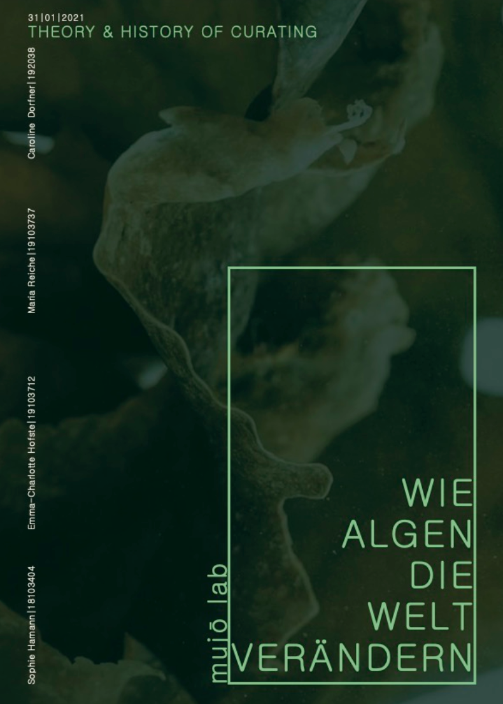
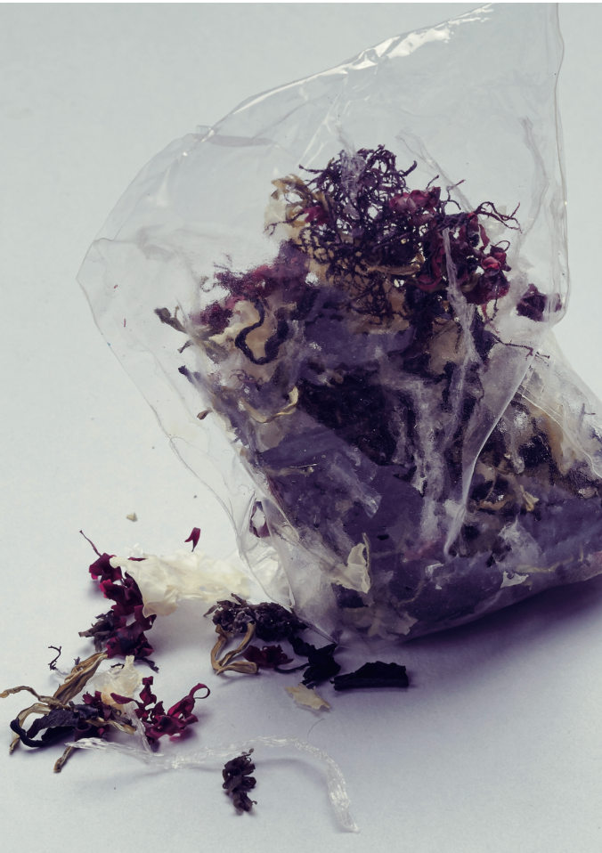
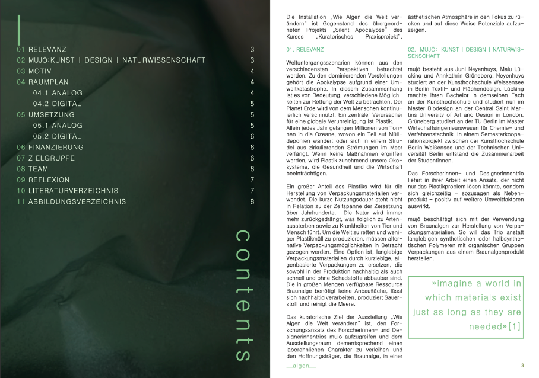
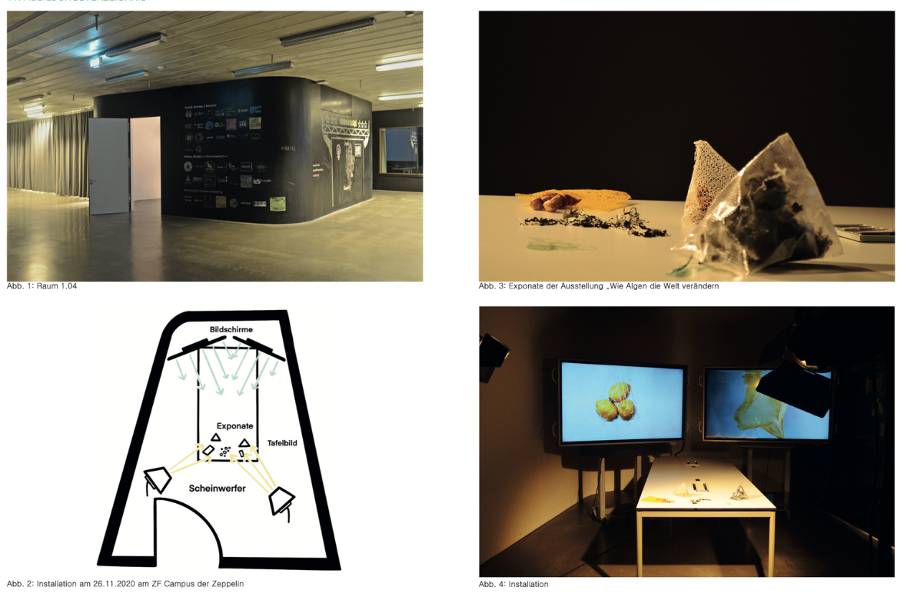

How Algae Can Change the World is a curatorial and research-based exhibition project exploring algae as a material, ecological, and political actor in planetary futures.
Developed as part of a group exhibition at Zeppelin University, the project contributed a curatorial perspective that translated complex material science into an accessible visual and experiential format. The exhibition connected research, design, and ecology to question dominant narratives of growth, sustainability, and resource extraction.
The project was realized in collaboration with mujō, a Berlin-based interdisciplinary team of designers and engineers developing biodegradable packaging materials from brown algae. Their research into algae-based alternatives to synthetic packaging formed the material and conceptual core of the exhibition.
We designed a laboratory-like exhibition environment that mirrored mujō’s scientific and design-driven research practice. By foregrounding processes, material samples, and experimental states, the exhibition made visible the transformation of algae from living organism to industrial material.
Positioned within broader discourses of biodesign, circular materials, and climate-conscious innovation, the project framed algae not only as a solution to ecological crisis, but as a lens through which alternative imaginaries of production, care, and coexistence can be articulated.
"""


